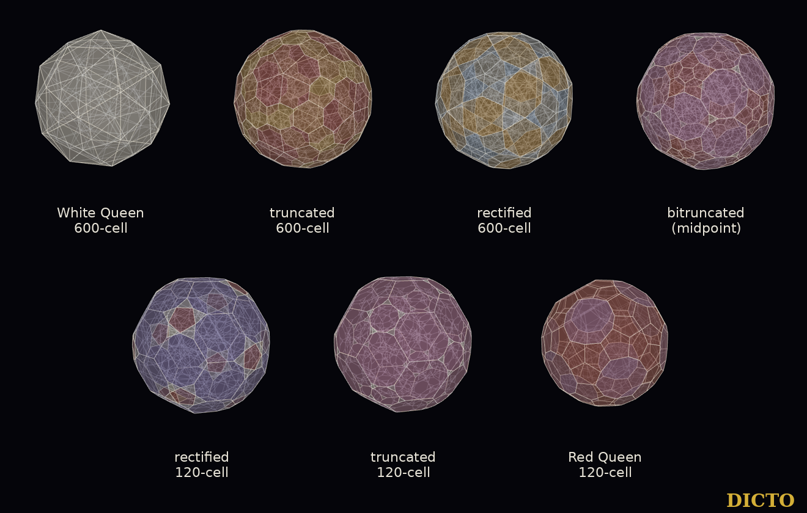

The five stages from the 600-cell to the 120-cell, built from the White Queen, with their slices and shadows
The White Queen and the Red Queen are polar partners. Between them lies a path of solids, each made by cutting her corners a little deeper.
In ordinary space the icosahedron becomes the dodecahedron in the same way. Cut its twelve corners a third of the way along each edge and it becomes the truncated icosahedron, the football: 12 pentagons and 20 hexagons. Cut to the middle of each edge and it is the icosidodecahedron; cut further and it becomes the truncated dodecahedron, and at last the dodecahedron. DICTO proposed the four-dimensional version: an icosahedron with hexagons, in the fourth dimension. It is the midpoint of the same path one dimension up, from the White Queen to the Red Queen.

Each stage is a set of points chosen on the White Queen's own edges, triangles or cells; nothing else is needed.
We take the White Queen of #63: 120 corners, 720 edges of length e, 1200 triangles, 600 tetrahedra. Her polar partner's corners are the centres of her cells, and two of them are joined when the two cells share a triangle (#65): 1200 Red Queen edges of length f.
| Stage | Corners built from the White Queen | Corners | Edges | Cells |
|---|---|---|---|---|
| White Queen, 600-cell | her corners | 120 | 720 | 600 tetrahedra |
| truncated 600-cell | on each edge, 1/3 of the way from each end | 1440 | 4320 | 120 icosahedra, 600 truncated tetrahedra |
| rectified 600-cell | the middle of each edge | 720 | 3600 | 120 icosahedra, 600 octahedra |
| bitruncated 600-cell | on each triangle, 3/5 of the way from the middle of each of its edges to its centre | 3600 | 7200 | 120 truncated icosahedra, 600 truncated tetrahedra |
| rectified 120-cell | the centre of each triangle | 1200 | 3600 | 120 icosidodecahedra, 600 tetrahedra |
| truncated 120-cell | on each Red Queen edge, (5 − √5)/10 of the way from each end | 2400 | 4800 | 120 truncated dodecahedra, 600 tetrahedra |
| Red Queen, 120-cell | the centres of her cells | 600 | 1200 | 120 dodecahedra |
Table 1. The seven solids. The counts are the classical ones; we checked them on our models, together with the cells (each cell is the set of corners highest along one of the White Queen's 120 corner directions or 600 cell directions).
Proposition 1 (the cuts). With the corners of Table 1, every edge of each stage has one length exactly when the cuts are at 1/3 (truncated 600-cell), 3/5 (bitruncated) and (5 − √5)/10 (truncated 120-cell); the rectified stages need no choice.
Proof. Truncated 600-cell. Its edges are of two kinds: round each White Queen corner, between the points on two of her edges at that corner, length s·e (two edges at a corner meet at 60°); and along each of her edges, between its two points, length (1 − 2s)·e. They are equal exactly when s = 1/3. Bitruncated. In a triangle abc let mab be the middle of ab and g the centre; the corner on ab is q = (1 − l)·mab + l·g. Within the triangle, qab to qac has length (1 − l)·|mab − mac| = (1 − l)·e/2. Between the triangles abc and abd of one tetrahedron, the two corners on ab are l·|gabc − gabd| = l·|c − d|/3 = l·e/3 apart. Equal exactly when (1 − l)/2 = l/3, that is l = 3/5. Truncated 120-cell. Along a Red Queen edge the two corners are (1 − 2t)·f apart; round a Red Queen corner P, the corners on the edges PQ and PR are t·|Q − R| apart, and Q and R, two neighbours of P on one pentagon, are a pentagon diagonal φ·f apart. Equal exactly when t·φ = 1 − 2t, that is t = 1/(φ + 2) = (5 − √5)/10. Rectified stages. Middles of edges, and centres of triangles, are joined only to their nearest neighbours, all at one distance (e/2 and e/3). ∎
The cuts were also found numerically, independently, by asking that every corner's nearest neighbours be equally far; the values agree to 10−14 (study cuts.py). In the app the stages are built the same way, from the White Queen's model, and checked: corners and edges as in Table 1, all corners on one sphere, all edges of one length.
A four-dimensional solid can be seen by its shadows and by its slices. We give both, for every stage, in the four directions the queens were mapped in.
The four main directions are those of #63: along a White Queen corner (vertex first), the middle of an edge (edge first), the centre of a triangle (face first) and the centre of a cell (cell first). In each, the slices are cut at every height where a corner lies and halfway between neighbouring heights, from the centre to the tip; between two neighbouring heights the slice keeps one pattern (#63, Lemma), so this list is complete. All seven solids have a centre of symmetry, so the other half repeats this one.
Theorem. (1) In the four main directions the five stages have the numbers of slices, the numbers of different slice patterns and the shadows of Table 2: 288, 138, 478, 180 and 318 slices from the centre to the tips, 1402 in all. (2) At the two ends the same count gives the exact atlases: the White Queen's 62 slices and 4 shadows (#63) and the Red Queen's 124 slices and 4 shadows (#65). (3) In every direction the shadows of the truncated and the rectified 600-cell have the same number of faces (110, 232, 272, 194), and so do the shadows of the rectified and the truncated 120-cell (102, 252, 296, 242).
| Solid | Slices v · e · f · c | All | Patterns v · e · f · c | Shadows, corners/faces: v · e · f · c |
|---|---|---|---|---|
| White Queen | 9 · 17 · 21 · 15 | 62 | 7 · 15 · 19 · 14 | 42/80 · 52/80 · 56/96 · 44/78 |
| truncated 600-cell | 29 · 85 · 103 · 71 | 288 | 21 · 77 · 98 · 62 | 192/110 · 280/232 · 312/272 · 240/194 |
| rectified 600-cell | 17 · 39 · 49 · 33 | 138 | 16 · 35 · 49 · 33 | 132/110 · 150/232 · 168/272 · 144/194 |
| bitruncated | 43 · 135 · 175 · 125 | 478 | 23 · 110 · 151 · 97 | 240/122 · 580/312 · 636/368 · 504/266 |
| rectified 120-cell | 21 · 49 · 65 · 45 | 180 | 14 · 46 · 60 · 41 | 140/102 · 260/252 · 282/296 · 240/242 |
| truncated 120-cell | 33 · 87 · 117 · 81 | 318 | 12 · 69 · 96 · 62 | 200/102 · 500/252 · 564/296 · 480/242 |
| Red Queen | 15 · 33 · 45 · 31 | 124 | 8 · 29 · 40 · 24 | 80/42 · 160/92 · 180/104 · 158/84 |
Table 2. The atlas. v, e, f, c: the White Queen's vertex-first, edge-first, face-first and cell-first directions (for the Red Queen these are her cell, pentagon, edge and corner directions, in that order). A pattern is a slice's corners, edges, faces and faces by sides; two slices of one direction with the same counts are one pattern. Every three-dimensional slice and every shadow satisfies Euler's formula V − E + F = 2.
Proof and checks. Each slice is the convex hull of the solid's corners at that height and the points where its edges cross it, found in the three-dimensional space of the cut; faces are the coplanar parts of the hull, each counted by its true corners. The computation is in double precision with a tolerance of 10−9; it is checked at both ends against the exact atlases in ℚ(√5) of #63 and #65 (the numbers of slices in all four directions, 62 and 124, and the corners and faces of all 8 shadows agree), and by Euler's formula on every three-dimensional slice and every shadow. The shadows were computed a second time by the app's own hull code: the two agree on all 23 shadows the study gives; in the cell-first direction the study's merging of coplanar faces failed Euler's check for the five stages, and those five shadows are the app's, each checked by Euler's formula. Part (3) is read off the table. ∎
All triangles. The White Queen has twelve slices made only of triangles (#63; here 5, 2, 1 and 4 in the four directions). Of the stages, only the truncated 600-cell (3, vertex first), the rectified 600-cell (1 vertex first, 1 cell first), the rectified 120-cell (1, cell first) and the truncated 120-cell (3, cell first) have any; the bitruncated midpoint has none. The last slice at the tip is a single corner, an edge, a polygon or a whole cell, depending on the solid and the direction (study data).
Halfway from White to Red the solid is its own partner: cut from either queen, the same shape appears.
The bitruncated 600-cell is also the bitruncated 120-cell: cutting the Red Queen's corners as deeply from her side reaches the same solid, which is why it stands at the middle of the path. Its 120 truncated icosahedra are the footballs of DICTO's proposal; its 600 truncated tetrahedra fill the places of the White Queen's cells. Its shadows are the richest in Table 2, up to 636 corners; its slices number 478, a third of all the slices of the five stages.
Kaleidohedra and Rhombiverse, the White Queen world, Shadow view: the slider "From White to Red" runs from the White Queen through the five stages to the Red Queen, in all four directions and the turnings between them; the caption gives each stage's corners and cells and its shadow's corners and faces. The link https://kaleidohedra.dictospheres.com/?open=whitequeen:t12 opens the midpoint.
Sources checked (30 October 2026). Reference library (ask-library, one query on slices of uniform four-dimensional polytopes, the truncated 600-cell, the bitruncated 120-cell and Boole Stott's semiregular polytopes): A. Boole Stott, "On certain series of sections of the regular four-dimensional hypersolids" (1900); H. S. M. Coxeter, "Regular and semi-regular polytopes I" (1940), as cited in the library's honeycomb article. Web: MacTutor, "Alicia Boole Stott" (mathshistory.st-andrews.ac.uk); Agnes Scott College, Biographies of Women Mathematicians, "Alicia Boole Stott"; the catalogue record of A. Boole Stott, "Geometrical deduction of semiregular from regular polytopes and space fillings", Verhandelingen der Koninklijke Akademie van Wetenschappen te Amsterdam 11 (1) (1910, volume dated 1913), 1–24 (Northeastern digital collection; not read); R. Klitzing, "Stott" (bendwavy.org); ProofWiki, "Alicia Boole Stott"; Wikipedia, "Truncated 120-cells", "Rectified 120-cell", "Rectified 600-cell", "Cantellated 120-cell", "H4 polytope"; Polytope Wiki pages on the H4 family. Queries: "Boole Stott 1910 geometrical deduction of semiregular from regular polytopes"; "cross sections slices bitruncated 600-cell truncated 120-cell uniform polychora". Wythoff (1918) and Coxeter, Regular Polytopes (3rd ed. 1973) are cited for their well-known contents, not re-read.
Data and code. Study 2026-10-30-queen-stages: stages.py (Wythoff's construction from one flag of the 600-cell; counts and cells of all seven solids), cuts.py (the cut positions, found numerically and recognised), atlas.py (every slice and shadow), stages.json, stages_atlas.json, figure.py. App: src/app/queen-stages-geometry.js and its tests (tests/unit/queen-stages.test.mjs, tests/browser/queen-stages.mjs). References: DICTO, The White Queen 600-cell (#63), DICTO DOI 10.5281/zenodo.23690856; DICTO, The Red Queen 120-cell (#65), DICTO DOI 10.5281/zenodo.23716140.
DICTO's idea: the four-dimensional icosahedron with hexagons, and the stages between the queens; the names White Queen and Red Queen are his. Computation, proofs and drafting with Claude (Anthropic). Licence CC BY-SA 4.0.